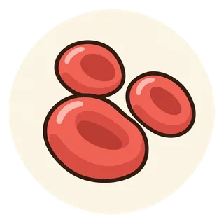

健診結果を、次の一歩へ
貧血・ヘモグロビンの結果を読む
貧血は、鉄が足りない場合だけではありません。原因を確かめて、必要な対処につなげます。
結果に書かれた判定と受診・再検査の案内を確認してください。基準範囲や治療目標は、施設や体の状態によって異なります。
1．検査の意味を知る
ヘモグロビン（Hb）は赤血球に含まれ、酸素を運ぶたんぱく質です。貧血は、その濃度が低下した状態を指します。
鉄不足のほか、出血、ビタミン不足、腎臓の病気など、原因はさまざまです。必要に応じて追加の検査で確かめます。
立ちくらみだけで貧血とは判断できません。逆に、症状がなくても検査で貧血が見つかることがあります。
2．相談の目安を確認する
健診で貧血を指摘されたら、鉄サプリだけで様子を見続けず、原因を相談しましょう。息切れ、動悸、強い疲れ、月経の量や便の変化なども伝えてください。
受診の時期が分からない場合は、健診を受けた施設やかかりつけ医に確認しましょう。
3．今日できることを選ぶ
結果を持参する
今回のHbと前回の結果をそろえる。
出血・体調をメモ
月経が多い、便の色が変わった、息切れするなどの変化を伝える。
サプリも共有
鉄剤やサプリを使っている場合は、名前と量を伝える。
生活の工夫・薬について詳しく
参考資料
原稿・出典確認日：2026年10月27日。行動カードと質問例は、資料を踏まえた編集上の提案です。このページは一般的な情報であり、個別の診断・治療を決めるものではありません。